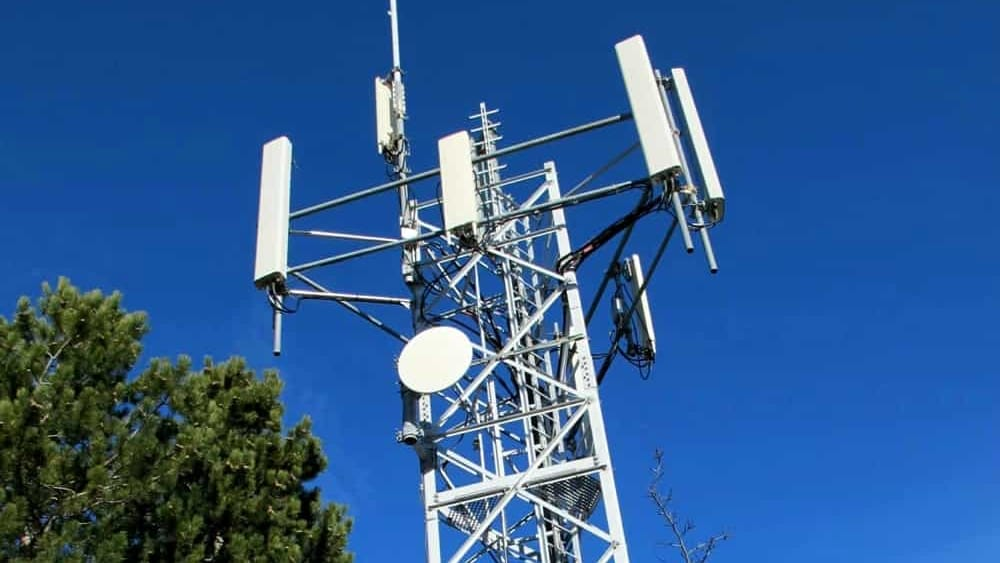

Storia di Ospitaletto
Ospitaletto, comune della provincia di Brescia, è caratterizzato da una storia industriale ricca e da un'evoluzione tecnologica marcata. Il ruolo delle telecomunicazioni è stato fondamentale per il progresso della comunità locale.
Cos'è un'Antenna Telefonica?
Un'antenna telefonica serve per trasmettere e ricevere segnali mobili. Le antenne 4G e 5G moderne migliorano le velocità di connessione e stabilità, rispettando le normative per minimizzare gli impatti ambientali e sanitari.

Considerazioni Personali
Il dibattito sulle antenne riguarda salute e impatto visivo. Trasparenza e dialogo possono migliorare il rapporto tra cittadini e tecnologia. Ospitaletto rappresenta un esempio interessante di questo equilibrio.